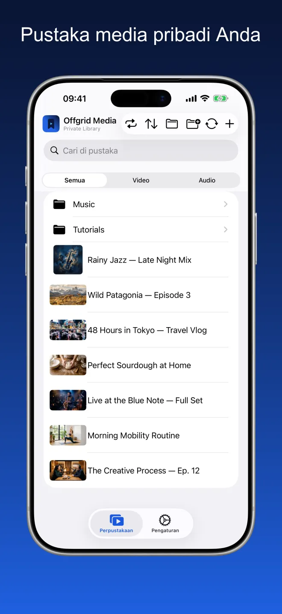
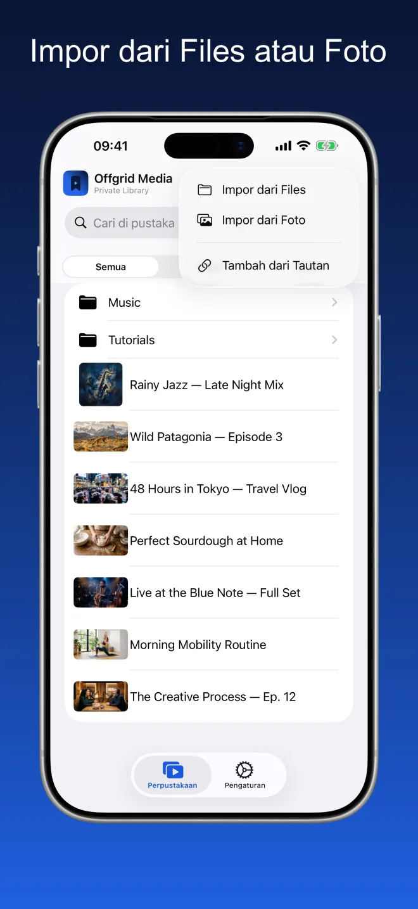
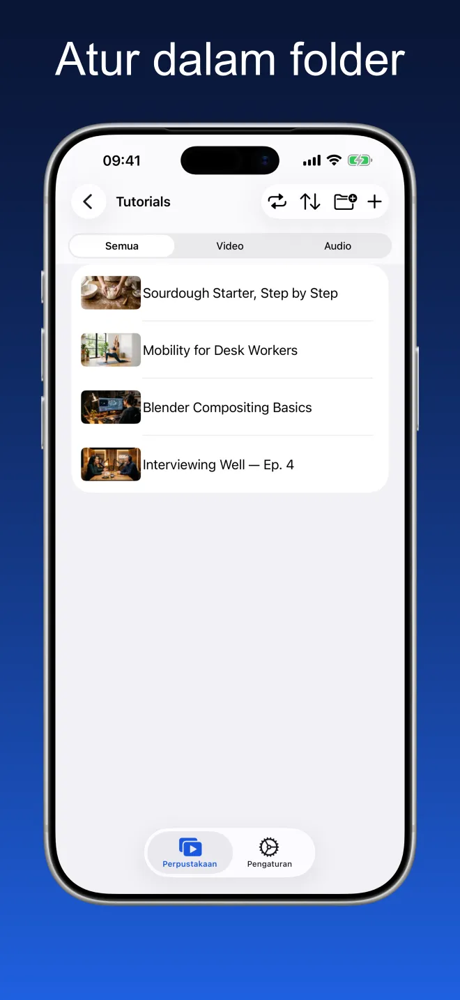
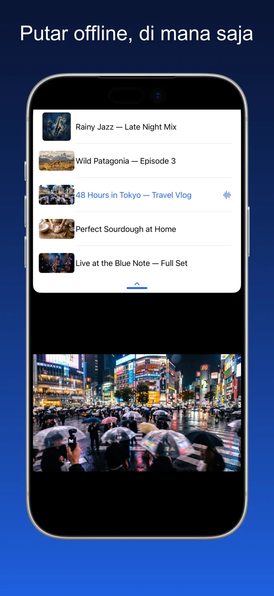
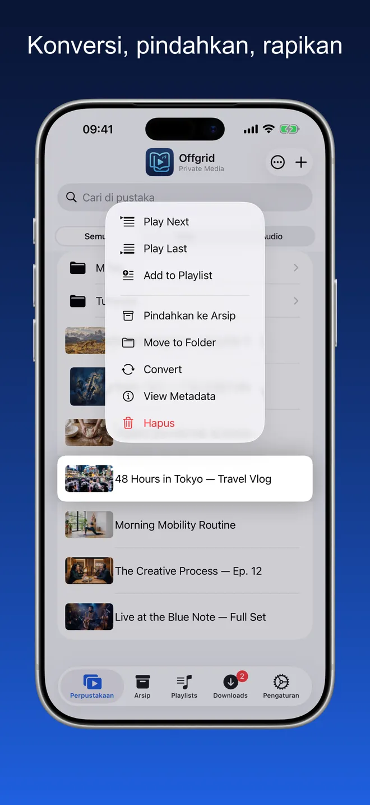
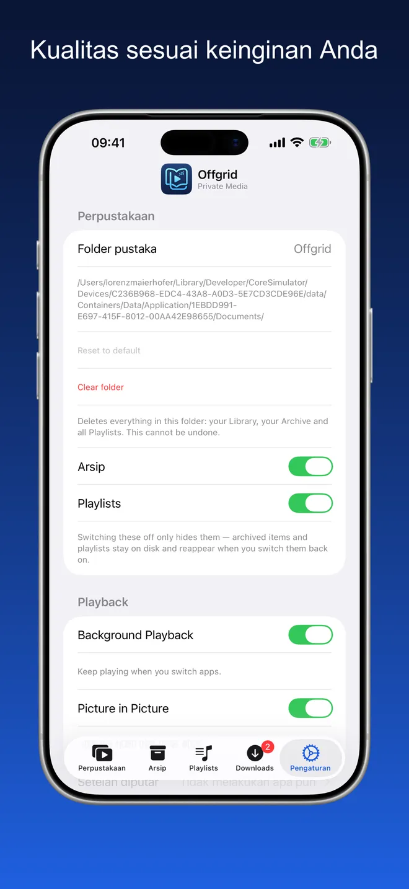

Offgrid Media · Pustaka Pribadi
Semua yang Anda simpan,
offline.
Bawa masuk video dan audio yang sudah Anda miliki — dari Files, dari Foto, atau dari tautan yang berhak Anda simpan — lalu putar semuanya secara offline di satu tempat yang rapi.
Coba saja. Jaringan mati — pustaka Anda tetap berjalan.

Satu tempat rapi untuk media milik Anda sendiri
Folder, pencarian, dan saringan video atau audio. Gambar mini diambil dari berkasnya sendiri, sampul album dan metadata tetap terjaga.





Impor, atur, putar
Impor dari Files atau Foto
Atur dalam folder
Putar offline, di mana saja
Pemutar sungguhan, bukan sekadar folder berkas
Semua di bawah ini berfungsi tanpa jaringan.
Impor dari Files dan Foto
Tambahkan video dan audio dari iCloud Drive, dari perangkat Anda, atau dari pustaka foto Anda. Semuanya masuk ke pustaka dan siap diputar.
Atur sesuka Anda
Buat folder, pindahkan item di antaranya, dan cari di seluruh koleksi Anda. Saring berdasarkan video atau audio saat ingin fokus.
Dibuat untuk offline
Begitu ada di pustaka, item tetap berada di perangkat Anda. Tanpa buffering, tanpa perlu koneksi, tidak ada yang dialirkan dari mana pun.
Pemutar sungguhan
Putar berurutan atau acak, lanjutkan dari tempat Anda berhenti, susun antrean, dan gunakan Picture in Picture sambil memakai aplikasi lain. Sampul album dan metadata tetap terjaga.
Audio latar
Terus mendengarkan saat berpindah aplikasi atau mengunci layar.
Pilih kualitas Anda
Atur kualitas favorit sekali saja di Pengaturan — terbaik yang tersedia, 720p, 480p, 360p, atau hanya audio.
Tanpa akun. Tanpa iklan. Tanpa pelacakan.
Offgrid Media menyimpan semuanya secara lokal di perangkat Anda. Tidak ada yang diunggah, tidak ada yang dibagikan, dan tidak perlu akun.
Tidak ada yang dikumpulkan, karena tidak ada tujuan pengiriman
Offgrid Media tidak punya akun maupun server sendiri. Manifes privasi App Store-nya menyatakan tanpa pelacakan dan tanpa data yang dikumpulkan.
Pertanyaan umum
Tidak. Begitu ada di pustaka, item tersimpan di perangkat Anda dan bisa diputar tanpa jaringan. Tidak ada yang dialirkan saat pemutaran, jadi tidak ada buffering dan tidak ada koneksi yang bisa putus.
Di sebuah folder pada perangkat Anda, di dalam penyimpanan aplikasi. Anda bisa memilih folder pustaka lain di Pengaturan, dan karena aplikasi mendukung app Files, berkas yang sama bisa Anda telusuri di sana. Tidak ada yang diunggah dan tidak ada sinkronisasi awan.
Impor dari Files (iCloud Drive atau perangkat), impor dari pustaka foto, atau tambahkan dari tautan yang berhak Anda simpan. Impor adalah jalur utama; menambahkan dari tautan hanya kemudahan tambahan.
Ya. Aktifkan audio latar di Pengaturan, maka pemutaran berlanjut saat Anda berpindah aplikasi atau mengunci layar, lengkap dengan judul, sampul, dan kontrol di Layar Terkunci serta Pusat Kontrol. Video bisa mengambang di atas aplikasi lain dengan Picture in Picture.
Tidak. Offgrid Media tidak punya akun, server, analitik, maupun SDK pihak ketiga. Manifes privasi App Store-nya menyatakan tanpa pelacakan dan tanpa data yang dikumpulkan. Satu-satunya izin yang diminta adalah notifikasi.
Gratis. Tanpa langganan, tanpa pembelian dalam aplikasi, tanpa iklan.
Harap hanya tambahkan konten yang berhak Anda simpan. Kepatuhan terhadap ketentuan layanan platform mana pun dan hukum yang berlaku sepenuhnya menjadi tanggung jawab Anda.
Pustaka Anda. Perangkat Anda. Tanpa perlu sinyal.
Offgrid Media gratis, untuk iPhone dan iPad, dalam 11 bahasa.